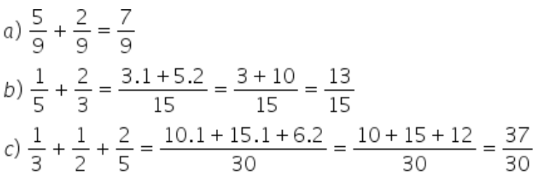
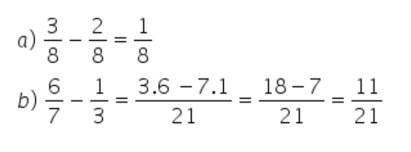
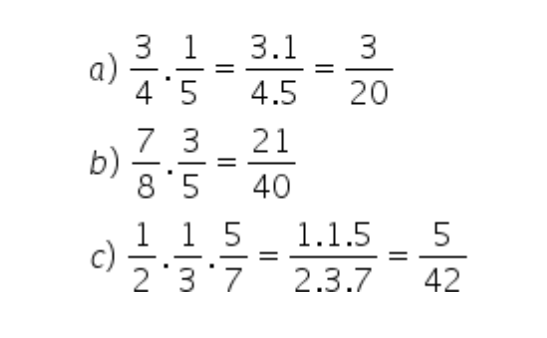
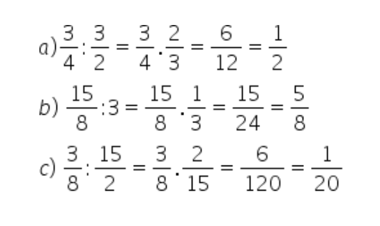

Sumário
As operações com frações são parte fundamental da matemática e estão presentes em diversos contextos do nosso dia a dia. Elas são utilizadas para representar partes de um todo e permitem realizar cálculos envolvendo quantidades que não são necessariamente números inteiros. Nesta explicação, abordarei as quatro operações básicas com frações: adição, subtração, multiplicação e divisão.
Vamos começar com a adição e a subtração de frações. Para realizar essas operações, é necessário que as frações tenham o mesmo denominador, ou seja, o número que aparece abaixo da linha. Caso as frações não tenham o mesmo denominador, precisamos encontrar um denominador comum antes de realizar a operação.
Para somar frações é necessário identificar se os denominadores são iguais ou diferentes. Se forem iguais, basta repetir o denominador e somar os numeradores. Contudo, se os denominadores são diferentes, antes de somar devemos transformar as frações em frações equivalentes de mesmo denominador.
Neste caso, calculamos o Mínimo Múltiplo Comum (MMC) entre os denominadores das frações que queremos somar, esse valor passa a ser o novo denominador das frações. Além disso, devemos dividir o MMC encontrado pelo denominador e o resultado multiplicamos pelo numerador de cada fração. Esse valor passa a ser o novo numerador.
Exemplos:
Para subtrair frações temos que ter o mesmo cuidado que temos na soma, ou seja, verificar se os denominadores são iguais. Se forem, repetimos o denominador e subtraímos os numeradores.
Se forem diferentes, fazemos os mesmos procedimentos da soma, para obter frações equivalentes de mesmo denominador, aí sim podemos efetuar a subtração.
Exemplos:

Se quiser saber mais, acesse aqui Adição e Subtração com Frações
A multiplicação de frações é realizada multiplicando-se os numeradores e os denominadores. No entanto, é importante lembrar que sempre podemos simplificar a fração resultante, caso haja números em comum no numerador e no denominador.
Exemplos:
Já a divisão de frações é realizada multiplicando-se a primeira fração pelo inverso da segunda. Por exemplo, se queremos dividir por , podemos multiplicar pelo inverso: () ÷ () = () . () = . Novamente, é importante simplificar a fração resultante, caso seja possível. Neste caso, não há divisores comuns entre o numerador e o denominador, então a fração não pode ser simplificada.
Exemplos:

Se quiser saber mais, acesse aqui Multiplicação e Divisão com Frações